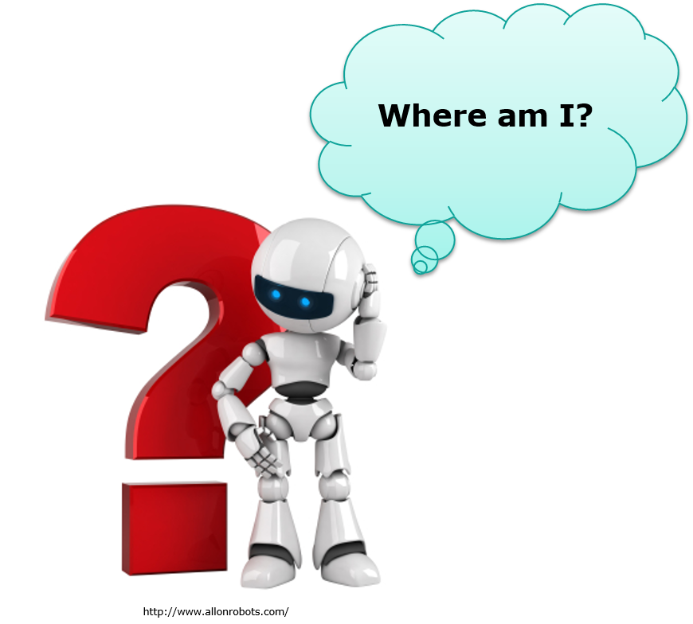

layout: true <div class="header"><img src="https://rosin-project.eu/wp-content/uploads/rosin_ack_logo_wide.png" style="background-color:transparent"/></div> <div class="footer"><img src="https://www.ipa.fraunhofer.de/content/dam/ipa/ipa.svg" /><p>© Fraunhofer IPA</p></div> <div class="triangle"></div> --- class: center, middle name: main_title # Navigation using ROS 2 ## Introduction <img src="../static/intro.png" alt="Intro" style="height:300px"/> --- ## Localization  --- ## Navigation using ROS 2 - Agenda * Localisation * Mapping * Path Planning --- ## Localization **"Where am I ?"** * How did I move ? * Use **proprioceptive** sensors (Encoder on wheels, IMU) => **Relative** robot displacement * What can I see ? * Use **exteroceptive** sensors (Lidar, Camera, GPS) => **Absolute** robot pose estimation --- **"Where am I really ?"** * Sensors are not perfect ! * Proprioceptive sensors create drift => Need different sources and absolute to compensate the drift * Sensing the environment take times ! * Comparing exteroceptive sensors data to form a map is slow => Need proprioceptive sensors source: R. Siegwart and I. R. Nourbakhsh, Introduction to Autonomous Mobile Robots (Intelligent Robotics and Autonomous Agents), The MIT Press, Cambridge, Mass, USA, 2004. --- ## Localization - TFs .cols[ .forty[ *TF Names:* "map" - Origin of the world (fixed frame) "odom" - **Parent** of the odometry "base_footprint" - Projection of the robot center in the map (no height) "base_stabilized" - Adds information about the robot height relative to the map/odom layer. "base_link" - Center of the robot *REP 105 - Coordinate Frames Naming* [https://www.ros.org/reps/rep-0105.html] ] .sixty[ ] ] --- ## Localization - The two parts .cols[ .fifty[ **Relative Position Estimation**: *How did I move ?* Fast, but error due to uncertainties or drift. Gives position change over time w.r.t. starting point. Sources: Odometry, IMU etc... ] .fifty[ **Absolute Position Estimation**: *What can I see?* Slow, but less error prone. Give position in a map w.r.t a fixed frame. Sources: GPS, Lidar, etc... ] ] .cols[ .fifty[ *(example rate 100Hz)* ] .fifty[ *(example rate 25Hz)* ] ] Completing this tree *reliably* at a *high rate* requires sensor fusion. --- ## Basic TF Tree Instead of `base_link`, can also be `base_footprint`. Depends on robot and designer. --- ## Sensor Fusion Ex: [robot_localization package](https://github.com/cra-ros-pkg/robot_localization/tree/foxy-devel) * This is a package to support experiments in a [research paper](https://github.com/cra-ros-pkg/robot_localization/blob/foxy-devel/doc/robot_localization_ias13_revised.pdf). * Provides 3D localization through sensor fusion using Kalman Filters. * Can consume a large number and many types of sensors. * Experiment shows the effects of a few different combinations on localization accuracy. .cols[ .fifty[ ] .fifty[ ] ] --- ## Localization in ROS 2 - AMCL .cols[ .sixty[ Implementation of localization in [Navigation 2](https://github.com/ros-planning/navigation2), port of [ROS 1 AMCL](http://wiki.ros.org/amcl) Adaptive Monte Carlo Localization with: -Probabilistic 2D localization (X,Y,Θ) -Particle Filter (Particles are vectors of guessed pose) -Pose tracking against a known map -Correct the odometry drift ] .forty[ ] ] AMCL: * Estimate the transform from map to base_link * Reads scan, TF, map and initial pose * Publishes the transform from map to odom --- ## Localization - In short * Don't rely on only one sensor * Be careful of your TF tree --- ## Navigation - Questions ?